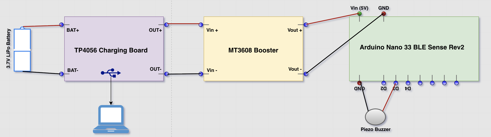

Safe-Speed Choreography Assistant
Arduino-based wearable system for dance safety

Arduino-based wearable system for dance safety
This project combines my passion for dance and biomedical engineering by creating a wearable device that transforms how dancers train safely. This Arduino-based smart device uses sophisticated motion sensors to track movement patterns and speed, providing instant feedback to prevent joint and muscle injuries. Already proven effective with young dancers, it represents the future of safe dance training.
The system's hardware architecture consists of the following key components interconnected to enable precise motion tracking and real-time feedback:
The device uses an Arduino Nano 33 BLE Sense Rev2 microcontroller to capture real-time motion data from its built-in inertial measurement unit (IMU). The Arduino continuously measures the dancer's arm angle and triggers a piezo electronic buzzer to beep whenever the movement goes outside a preset range, providing immediate audio feedback during choreography practice. The system is powered by a 3.7 V LiPo rechargeable battery, which connects to a TP4056 charging module for safe recharging via USB. The MT3608 DC-DC step-up converter boosts the battery voltage to a stable 5 V to power the Arduino and buzzer. Together, these components create a compact, battery-powered wearable that helps dancers maintain correct posture and rhythm through both real-time feedback and recorded motion analysis.
These iterative changes reflect a user-centered design approach: optimizing sensor integration, power, mechanical reliability, and aesthetics to make the prototype practical for dance rehearsal.
"This device helped me notice subtle fatigue before it became a strain. I could adjust my technique instantly!" – Dance Instructor
"Visualizing my arm motion side-by-side with the teacher helped me improve faster than I expected." – Student Dancer